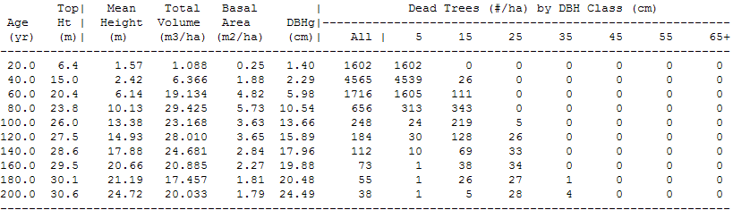

The Mortality Table is accessed through the Tables Menu or the Tool Bar icon above. This table reports periodic (non-cumulative) mortality over the last age step.
The first two columns, Stand Age and Top Height, refer to the live stand. The remaining columns are periodic mortality values, including numbers of dead trees per hectare, by diameter class. The table reports periodic mortality for all species combined.
Also See: Snag Table
Live tree yield tables and mortality tables in TIPSY's database were both produced with TASS. In TASS, trees die primarily by 2 mechanisms: non-competitive juvenile mortality and suppression. Trees that die from non-competitive juvenile mortality are selected at random to die, and the number of trees selected decreases as height increases. Trees killed by suppression are either overtopped by more than a critical distance, or their crown length is shorter than a critical length given the current top height .
The example below shows a Mortality Table for a lodgepole pine stand of natural origin with an initial density of 10 000 stems per ha, regen delay of 2 yrs, a site index of 20 m, and no precommercial thinning. This example was created with a previous version of TIPSY.

Between age 40 and 60, 1716 trees per hectare died.
The mean height of these trees is 6.14 m, the quadratic mean DBH is 5.98 cm, the sum of the total tree volumes is 19.134 m³/ha, and the sum of the individual basal areas is 4.82 m²/ha.
Of these 1716 trees, 1605 trees had a DBH between 0.1 and 10.0 cm and 111 trees had a DBH between 10.1 and 20.0 cm.